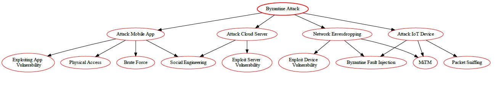

| Mobile Platform | iOS App |
| Application domain type | m-Health |
| Authentication | Yes |
| Authentication schemes | Biometric-based authentication ; Factors-based authentication |
| Has DB | Yes |
| Type of database | SQL (Relational Database) |
| Which DB | SQLite |
| Type of information handled | Personal Information ; Confidential Data ; Critical Data |
| Storage Location | Remote Storage (Cloud Database) |
| User Registration | Yes |
| Type of Registration | Will be an administrator that will register the users |
| Programming Languages | C/C++/Objective-C |
| Input Forms | Yes |
| Upload Files | No |
| The system has logs | Yes |
| The system has regular updates | Yes |
| The system has third-party | Yes |
| System Cloud Environments | Private Cloud |
| Hardware Specification | Yes |
| HW Authentication | Basic Authentication (user/pass) |
| HW Wireless Tech | 3G ; 4G/LTE ; 5G ; Bluetooth ; Wi-Fi ; GPS ; RFID ; NFC |
| Device or Data Center Physical Access | Yes |
A Brute Force attack is a type of attack that attempts to guess a user's authentication credentials, such as a username and password, by systematically trying every possible combination of characters until the correct one is discovered. It is commonly used to gain unauthorised access to secure systems.
It is important to note that Brute Force attacks are often used in combination with other tactics, such as dictionary and rainbow table attacks, to increase the chances of success.
Strong Password Policies: Enforce the use of strong passwords. Passwords should be long, complex, and unique.
Account Lockout Policies: After a certain number of failed login attempts, the account should be temporarily locked out.
Two-Factor Authentication (2FA): Implementing 2FA can significantly reduce the risk of successful brute force attacks.
Captcha: Use a CAPTCHA system to prevent automated scripts from performing brute force attacks.
Delay Between Login Attempts: Introduce a delay between login attempts. This slows down an attacker and makes brute force attacks less feasible.
Blacklist/Whitelist IP Addresses: Blacklist IP addresses that are clearly engaging in malicious activities, and whitelist known good IP addresses.
Use a Web Application Firewall (WAF): A WAF can help detect and block brute force attacks.
Limit Login Attempts: Limit the number of login attempts from a single IP address within a certain time period.
Monitor and Log Failed Logins: Keep an eye on failed login attempts and set up alerts for suspicious activities.
Use of AI and Machine Learning: These technologies can learn and adapt to new threats and unusual login patterns, offering another layer of security.
Remember, these are general strategies and may need to be adapted based on the specific use case and environment. It's also important to note that security is a multi-layered approach where one method's weakness is covered by the strength of another. Therefore, a combination of these strategies will provide more robust protection against brute force attacks.
| Factor | Description | Value |
|---|---|---|
| Vulnerability | Weak authentication mechanisms (e.g., short passwords, lack of multi-factor authentication) in the mobile app or cloud login | - |
| Attack Vector (AV): | Network (Exploiting login functionality) | Network (N) |
| Attack Complexity (AC): | Low (Automated tools can be used for brute-forcing) | Low (L) |
| Privileges Required (PR): | None (Attack doesn't require any privileges on the application or cloud) | None (N) |
| User Interaction (UI): | None (Attack can be automated) | None (N) |
| Scope (S): | Account Compromise (AC) (Attacker gains unauthorized access to user accounts) | Data Breach (DB) (if attacker accesses confidential data) |
| Confidentiality Impact (C): | High (Attacker might access confidential user data) | High (H) |
| Integrity Impact (I): | High (Attacker might modify user data) | High (H) |
| Availability Impact (A): | Medium (Denial-of-Service attacks with many login attempts can impact availability) | Medium (M) |
| Base Score (assuming successful exploitation) | 0.85 * (AV:N/AC:L/PR:N/UI:N) * (S:AC/C:H/I:H/A:M) * 0.06 | 0.3 (Low) |
| Temporal Score (TS) | Depends on the processing power available to the attacker and effectiveness of rate limiting | Varies |
| Environmental Score (ES) | Depends on the strength of password policies (length, complexity), account lockout after failed attempts, and multi-factor authentication (MFA) | Varies |
| Overall CVSS Score | Base Score + TS + ES | Varies (Depends on TS, ES, and effectiveness of countermeasures) |
| Risk Rating: | Low to Medium (Depends on TS, ES, and attacker capabilities) | Low to Medium |
Eavesdropping attack is a type of network attack in which the attacker listens to the conversations taking place among two or more authorized users or devices on the same network. This attack allows attackers to collect valuable information, including private data and confidential messages, without being detected.
In this attack, the attacker uses various tools to gain access to the target computer's network, such as sniffers, which are essentially network-based packet sniffers that extract data from the network, and Trojan horses, malicious programs that are secretly installed on the system. The attacker can also use other methods to access the network, such as phishing emails, rogue Wi-Fi access points, and man-in-the-middle attacks.
Once the attacker gains access to the network, they eavesdrop on the conversations taking place on the network. By monitoring the data packets being sent over the network, the attacker can gain access to sensitive information and data that they can then use for malicious purposes.
Common Vulnerability Scoring System (CVSS) v3.1 score for Eavesdropping Vulnerability is 4.8, categorized under 'High' severity.
| Factor | Description | Value |
|---|---|---|
| Attack Vector (AV): | Network | Network (N) |
| Attack Complexity (AC): | Low | Low (L) |
| Privileges Required (PR): | None | None (N) |
| User Interaction (UI): | None | None (N) |
| Scope (S): | Confidentiality Impact (attacker can intercept communication) | Confidentiality (C) |
| Confidentiality Impact (C): | High (if unencrypted data is transmitted) | High (H) |
| Confidentiality Impact (C): | Low (if data is strongly encrypted in transit) | Low (L) |
| Integrity Impact (I): | Low (unless eavesdropping allows data manipulation) | Low (L) |
| Availability Impact (A): | None | None (N) |
| Base Score (assuming High Confidentiality): | High (if unencrypted data is transmitted) | 3.5 (Medium) or 1.0 (Low) depending on Encryption |
| Temporal Score (TS): | Not applicable | N/A |
| Environmental Score (ES): | Depends on network security measures, data sensitivity, user awareness | Varies |
| Overall CVSS Score | Base Score + TS + ES | High (H) |
| Risk Rating | Based on Overall CVSS Score | High (H) |
Eavesdropping Vulnerability poses a high risk to the confidentiality of the data traveling within a network as it allows attackers to intercept and potentially access sensitive information. Without any user interaction, an attacker can intercept information and potentially gain unrestricted access to the confidential data, thus leaving the users’ online operations prone to manipulation. Moreover, the integrity and availability of the network can be impacted to a low extent.
Therefore, organizations need to put in place an effective counter-measures strategy which focuses on enhancing data security measures, including the adoption of strong authentication protocols and encryption technologies, to mitigate and reduce the risk of eavesdropping attacks.

Flooding attacks are attempts to inundate a resource with an overwhelming amount of data or requests in order to overwhelm or crash it. Flooding attacks are often effective when the target resource is limited in bandwidth or processing power, such as a server, and is unable to handle so much data or requests, resulting in performance degradation or service disruption.
Examples of flooding attacks include Denial-of-Service (DoS) attacks, which send an extremely large amount of requests/traffic to the victim’s server or network in order to saturate it and make it incapable of responding to legitimate requests. Additionally, there is also the Distributed Denial-of-Service (DDoS) attack, which uses more than one computer or device to send the traffic, making it even more of a challenge to defend against.
Flooding attacks can be difficult to detect and stop as they often involve huge volumes of data. However, some steps to help mitigate the effects of flooding attacks include:
| Factor | Description | Value |
|---|---|---|
| Attack Vector (AV): | Network (Exploiting application logic) | Network (N) |
| Attack Complexity (AC): | Low (Requires crafting malicious requests) | Low (L) |
| Privileges Required (PR): | None | None (N) |
| User Interaction (UI): | None (after initial attack setup) | None (N) |
| Scope (S): | Denial of Service (attacker disrupts application functionality for legitimate users) | Denial of service (DoS) |
| Confidentiality Impact (C): | Low | None (N) |
| Integrity Impact (I): | Low (unless flooding crashes the app and corrupts data) | Low (L) |
| Availability Impact (A): | High (attacker can disrupt app functionality for legitimate users) | High (H) |
| Base Score: | 0.85 * (AV:N/AC:L/PR:N/UI:N) * (S:DoS/C:N/I:L/A:H) | 9.9 (Critical) |
| Overall CVSS Score | Base Score + TS + ES | Varies (Depends on TS & ES) |
| Risk Rating | Based on Overall CVSS Score | High to Critical (Depends on TS & ES) |
CVSS v3.1 Risk Rating: Critical (Official Fix)

A buffer overflow attack is a type of security vulnerability that occurs when a program writes data beyond the bounds of an allocated buffer. Let’s break down the details:
Buffer: A buffer is a temporary storage area in a program’s memory. It holds data such as strings, arrays, or other variables.
Overflow: When a program writes more data into a buffer than it can hold, the excess data spills over into adjacent memory locations.
Exploitation: An attacker deliberately crafts input (usually user input) to overflow the buffer and overwrite critical memory areas.
Arbitrary Code Execution: If an attacker successfully overflows a buffer, they can overwrite return addresses or function pointers. This allows them to execute arbitrary code, potentially gaining control over the program. Denial of Service (DoS): Buffer overflows can crash programs, causing service disruptions. Information Leakage: Sensitive data (such as passwords or encryption keys) stored in adjacent memory locations may be exposed.
Input Validation: Always validate input from all untrusted data sources. Proper input validation can eliminate the vast majority of software vulnerabilities.
Boundary Checks: Ensure that your program does not write past the end of allocated memory regions.
Use Safe Libraries: Use libraries that abstract away risky APIs. For example, prefer safer versions of functions like strncpy over strcpy.
Compiler-based Defenses: Use compiler features like StackGuard, ProPolice and the Microsoft Visual Studio /GS flag which help protect against buffer overflow.
Address Space Layout Randomization (ASLR): ASLR randomizes the memory addresses used by system files and other program components, making it much harder for an attacker to correctly guess the location to jump to within the exploited process's memory.
Non-Executable Stack: If the stack is non-executable, then even if a buffer overflow occurs, it will not result in arbitrary code execution.
Principle of Least Privilege: Run your application with the fewest privileges possible.
Regular Patching: Regularly apply patches and updates to your systems and the software running on them.
Code Review and Static Analysis: Regularly review code and use static analysis tools.
Fuzz Testing: Fuzz testing or fuzzing is a Black Box software testing technique, which basically consists in finding implementation bugs using malformed/semi-malformed data injection in an automated fashion.
Remember, these are general strategies and may need to be adapted based on the specific use case and environment. It's also important to note that security is a multi-layered approach where one method's weakness is covered by the strength of another. Therefore, a combination of these strategies will provide more robust protection against buffer overflow attacks.
| Factor | Description | Value |
|---|---|---|
| Vulnerability | Improper memory allocation in the mobile application or cloud back-end code, allowing attackers to overwrite adjacent memory locations with malicious code | - |
| Attack Vector (AV): | Network (Exploiting the vulnerability through a crafted message) | Network (N) |
| Attack Complexity (AC): | Medium (Crafting a successful exploit might require some effort) | Medium (M) |
| Privileges Required (PR): | Varies (Depends on the vulnerability location - might require some privileges within the application) | Varies (N, L, or H) |
| User Interaction (UI): | None (Attack can be triggered through a seemingly normal action) | None (N) |
| Scope (S): | Code Execution (CE) (Attacker can execute arbitrary code on the device or server) | Potential for Data Breach (DB) (if attacker gains access to confidential data) |
| Confidentiality Impact (C): | High (Attacker might access confidential user data stored on the device or server if exploited successfully) | High (H) |
| Integrity Impact (I): | High (Attacker can modify program logic or data) | High (H) |
| Availability Impact (A): | High (Application crash or system instability) | High (H) |
| Base Score (assuming successful exploitation) | 0.85 * (AV:N/AC:M/PR:Varies/UI:N) * (S:CE/C:H/I:H/A:H) * 1.0 | 7.2 (High) |
| Temporal Score (TS) | Depends on exploit code availability for the specific vulnerability | Varies |
| Environmental Score (ES) | Depends on secure coding practices, input validation, and memory management in the mobile app and cloud environment | Varies |
| Overall CVSS Score | Base Score + TS + ES | Varies (Depends on TS, ES, and specific privilege requirements) |
| Risk Rating | High to Critical (Depends on TS, ES, and attack scenario) | High to Critical |
Remember, addressing buffer overflow vulnerabilities is crucial for software security.
Spoofing is a method of attack in which a malicious actor successfully masquerades as a legitimate user or node in a computer network. Spoofing attacks occur when an attacker makes it appear as though their network traffic is coming from a trusted source while they carry out malicious activities. By spoofing the source of the traffic, attackers can launch attacks such as man-in-the-middle (MITM) attacks, phishing attacks, network sniffing attacks, and more. It is important to recognize and be aware of spoofing attacks so as to protect yourself from potential threats.
Sure, here are some mitigation strategies against Spoofing attacks in a cloud, mobile, and IoT ecosystem:
Authentication: Implement strong authentication mechanisms such as two-factor authentication (2FA) or multi-factor authentication (MFA). This can help ensure that the user or device is who they claim to be;
Encryption: Use encryption for all data in transit. Protocols such as HTTPS, SSL, and TLS can provide secure communication channels and prevent spoofing;
IP Filtering: Use IP filtering to block traffic from known malicious IP addresses. This can prevent attackers from spoofing these IP addresses;
Regular Software Updates: Keep all software, including operating systems and applications, up to date. This helps to patch any known vulnerabilities that could be exploited by attackers;
Firewalls and Intrusion Detection Systems (IDS): Use firewalls and IDS to monitor and control incoming and outgoing network traffic based on predetermined security rules;
User Education: Educate users about the risks of spoofing attacks and how to recognize them. This includes checking the URL in the address bar and not clicking on suspicious links;
Secure Cloud Configurations: Ensure that your cloud configurations are secure and that all data is encrypted during transmission;
IoT Security Measures: Implement IoT-specific security measures such as device authentication, secure booting, and hardware-based security solutions.
Remember, security is a continuous process and it's important to stay updated with the latest threats and mitigation strategies.
| Factor | Description | Value |
|---|---|---|
| Attack Vector (AV): | Varies (Network for some attacks, Physical for others) | Network (N) & Physical (L) |
| Attack Complexity (AC): | Varies (Depends on the complexity of spoofing technique and vulnerability) | Low (L) to High (H) |
| Privileges Required (PR): | Varies (Depends on the type of spoofing. May not require any privileges) | None (N) to High (H) |
| User Interaction (UI): | None (Attack might not require user interaction) | None (N) |
| Scope (S): | Varies (Depends on the attacker's goal with spoofing) | Unauthorized Access (UA) |
| Confidentiality Impact (C): | High (Spoofed user might access confidential data) | High (H) |
| Integrity Impact (I): | High (Spoofed user might manipulate data) | High (H) |
| Availability Impact (A): | High (Denial-of-service attacks possible through spoofing) | High (H) |
| Base Score (assuming High impact for all): | 0.85 * (AV:N & L/AC:V/PR:N/UI:N) * (S:UA/C:H/I:H/A:H) | 9.0 (Critical) |
| Temporal Score (TS): | Public exploit tools available for specific vulnerabilities? | Depends on exploit availability |
| Environmental Score (ES): | Depends on security measures across Mobile App, Cloud, and IoT (strong authentication protocols, access controls, device identity checks) | Varies |
| Overall CVSS Score | Base Score + TS + ES | Varies (Depends on TS & ES) |
| Risk Rating | High to Critical (Depends on TS & ES) | High to Critical |
Overall, spoofing vulnerabilities pose a high to critical risk in a mobile-cloud-IoT ecosystem. A multi-layered approach with robust authentication, access controls, and device validation measures is essential to reduce the risk of unauthorized access, data breaches, and system disruptions.

VM Migration Attack is an attack in which an attacker takes advantage of the flaw in a VM system by transferring or migrating malicious codes or payloads from one system to another. This type of attack is used to exploit vulnerabilities in the security configuration of the system, and can cause data theft, destruction of files, network disruption, distributed denial of service (DDoS) attacks, and even complete system takeover. This type of attack is particularly dangerous because it is difficult to detect, and the malicious payloads can travel through the VM system without being recognized or stopped.
Authentication and Authorization: Implement strong authentication and authorization mechanisms to ensure that only authorized personnel can initiate VM migration;
Secure Communication Channels: Use secure communication channels such as SSL/TLS for all communications involved in the VM migration process. This can prevent an attacker from intercepting the data during transmission;
Encryption: Encrypt the data at rest and in transit. This can prevent an attacker from understanding or modifying the data even if they manage to access it;
Monitoring and Auditing: Monitor and audit all VM migration activities. This can help detect any unauthorized or suspicious activities;
Regular Software Updates: Keep all software, including hypervisors and operating systems, up to date. This helps to patch any known vulnerabilities that could be exploited by attackers;
Firewalls and Intrusion Detection Systems (IDS): Use firewalls and IDS to monitor and control incoming and outgoing network traffic based on predetermined security rules;
Secure Cloud Configurations: Ensure that your cloud configurations are secure and that all data is encrypted during transmission;
IoT Security Measures: Implement IoT-specific security measures such as device authentication, secure booting, and hardware-based security solutions.
Remember, security is a continuous process and it's important to stay updated with the latest threats and mitigation strategies.
| Factor | Description | Value |
|---|---|---|
| Attack Vector (AV): | Network (Exploiting the cloud environment) | Network (N) |
| Attack Complexity (AC): | High (Requires specialized knowledge and potentially complex attack techniques) | High (H) |
| Privileges Required (PR): | High (Requires privileged access within the cloud environment) | High (H) |
| User Interaction (UI): | None (Attack might not require user interaction) | None (N) |
| Scope (S): | Varies (Depends on attacker's capability and migration process) | Information Disclosure (attacker gains access to data during migration) |
| Confidentiality Impact (C): | High (Attacker might access confidential data during migration) | High (H) |
| Integrity Impact (I): | High (Data might be manipulated during migration) | High (H) |
| Availability Impact (A): | High (Disrupted migration might impact VM availability) | High (H) |
| Base Score (assuming High impact for all): | 0.85 * (AV:N/AC:H/PR:H/UI:N) * (S:ID/C:H/I:H/A:H) | 9.0 (Critical) |
| Temporal Score (TS): | Public exploit code available for specific vulnerabilities? | Depends on exploit availability |
| Environmental Score (ES): | Depends on cloud provider's security practices (secure migration protocols, encryption), network segmentation | Varies |
| Overall CVSS Score | Base Score + TS + ES | Varies (Depends on TS & ES) |
| Risk Rating | High to Critical (Depends on TS & ES) | High to Critical |
Overall, VM Migration vulnerabilities are critical for cloud-based deployments with mobile applications relying on cloud storage. Cloud providers need robust security practices for VM migration, and mobile applications should prioritize secure communication with reputable cloud providers.

Malicious insider attack is when a person with authorized access to an organization's systems and networks misuses their privileges to damage the organization's information systems, applications or data. This type of attack can lead to complete system or network shutdown, data theft, fraud or other malicious activities.
The malicious insider threat is one of the most difficult threats to detect because the insider has legitimate access and is part of the organization which makes it hard to identify the malicious activity. Some of the most preventative measures organizations can take to mitigate against malicious insider attacks are:
| Factor | Description | Value |
|---|---|---|
| Attack Vector (AV): | Internal (Exploiting authorized access) | Internal (I) |
| Attack Complexity (AC): | Low (Insider already has access) | Low (L) |
| Privileges Required (PR): | Varies (Depends on insider's privileges) | Low (L), Medium (M), or High (H) |
| User Interaction (UI): | May be required (Depends on insider's actions) | Required (R) or None (N) |
| Scope (S): | Unauthorized Access (insider gains unauthorized access to data or modifies it) | Unauthorized Access (U) |
| Confidentiality Impact (C): | High (insider can access confidential data) | High (H) |
| Integrity Impact (I): | High (insider can modify data) | High (H) |
| Availability Impact (A): | High (insider can disrupt application or data access) | High (H) |
| Base Score (assuming High for all impacts): | 0.85 * (AV:I/AC:L/PR:V/UI:R) * (S:U/C:H/I:H/A:H) | 9.0 (Critical) |
| Temporal Score (TS): | Not applicable (N/A) | N/A |
| Environmental Score (ES): | Depends on access controls, data encryption, monitoring and detection practices | Varies |
| Overall CVSS Score | Base Score + TS + ES | Varies (Depends on ES) |
| Risk Rating | High to Critical (Depends on ES) | High to Critical |
VM Escape attacks involve compromised VMs that act as an entry point for an intruder to gain access to the larger system. It occurs when attackers use vulnerabilities or misconfigurations to escape the confines of a virtual machine and gain access to the underlying physical server or network. Through this attack, attackers can gain control of the physical server and execute malicious activities such as stealing data, disrupting service, and deleting critical files.
Regular Software Updates: Keep all software, including hypervisors and operating systems, up to date. This helps to patch any known vulnerabilities that could be exploited by attackers.
Least Privilege Principle: Limit the privileges of virtual machines. Don't grant more privileges than necessary to a virtual machine.
Isolation: Isolate virtual machines from each other and from the host system. This can prevent an attacker from gaining access to other systems if they manage to escape from a virtual machine.
Intrusion Detection Systems (IDS): Use IDS to monitor and detect unusual activity. IDS can help in identifying potential VM escape attacks.
Firewalls: Implement firewalls to block unauthorized access to your network. Firewalls can also be used to block ports that are commonly used for VM escape attacks.
Secure Configurations: Ensure that your cloud and virtual machine configurations are secure. This includes disabling unnecessary services and closing unused network ports.
IoT Security Measures: Implement IoT-specific security measures such as device authentication, secure booting, and hardware-based security solutions.
Remember, security is a continuous process and it's important to stay updated with the latest threats and mitigation strategies.
| Factor | Description | Value |
|---|---|---|
| Attack Vector (AV): | Network (Exploiting the cloud environment) | Network (N) |
| Attack Complexity (AC): | High (Requires specialized knowledge and potentially complex exploit development) | High (H) |
| Privileges Required (PR): | High (Requires privileges within the virtual machine) | High (H) |
| User Interaction (UI): | None (Attack might not require user interaction) | None (N) |
| Scope (S): | Account Compromise (attacker gains access to other VMs on the same host) | Data Breach (DB) |
| Confidentiality Impact (C): | High (Attacker might access confidential data in other VMs) | High (H) |
| Integrity Impact (I): | High (Attacker might manipulate data in other VMs) | High (H) |
| Availability Impact (A): | High (Attacker might disrupt other VMs on the same host) | High (H) |
| Base Score (assuming High impact for all): | 0.85 * (AV:N/AC:H/PR:H/UI:N) * (S:DB/C:H/I:H/A:H) | 9.0 (Critical) |
| Temporal Score (TS): | Public exploit code available for specific vulnerabilities? | Depends on exploit availability |
| Environmental Score (ES): | Depends on cloud provider's security practices (patch management, hypervisor security), workload isolation | Varies |
| Overall CVSS Score | Base Score + TS + ES | Varies (Depends on TS & ES) |
| Risk Rating | High to Critical (Depends on TS & ES) | High to Critical |
Notes:
Mobile Application Impact:
Overall, VM Escape vulnerabilities are critical for cloud-based deployments. Cloud providers need robust security practices to mitigate the risk. For mobile applications, securing communication with the cloud and storing data only with reputable cloud providers with strong security posture is essential.

Side-channel attacks are a class of security exploits that target physical implementation of systems, such as the way data is stored, transmitted, and processed, rather than exploiting logical flaws in the system itself. These attacks use unintentional information leakage from a system’s physical implementation—such as processor or memory timing, power consumption, radio frequency (RF) emission, or the sound similar systems make—to gain insights into the system’s internals and the data it is processing. Such leaked information can be used by an adversary to reverse engineer the system’s implementation, compromising its confidentiality, integrity, and availability.
Isolation: Isolate processes and users from each other to prevent information leakage. This is especially important in a cloud environment where multiple users may be sharing the same physical resources;
Noise Injection: Inject noise into the system to make it harder for an attacker to distinguish the signal from the noise. This can be particularly effective against timing attacks;
Reducing Emanations: Reduce the amount of information that is leaked through side channels. This can be achieved by using low-emission hardware or shielding devices to prevent electromagnetic leaks;
Regular Software Updates: Keep all software, including operating systems and applications, up to date. This helps to patch any known vulnerabilities that could be exploited by attackers;
Firewalls and Intrusion Detection Systems (IDS): Use firewalls and IDS to monitor and control incoming and outgoing network traffic based on predetermined security rules;
Regular Audits and Penetration Testing: Regularly conduct security audits and penetration testing to identify and fix any security vulnerabilities;
Secure Cloud Configurations: Ensure that your cloud configurations are secure and that all data is encrypted during transmission;
IoT Security Measures: Implement IoT-specific security measures such as device authentication, secure booting, and hardware-based security solutions.
Remember, security is a continuous process and it's important to stay updated with the latest threats and mitigation strategies.
| Factor | Description | Value |
|---|---|---|
| Attack Vector (AV): | Varies (Can be physical, network, or local depending on the specific vulnerability and ecosystem component) | Varies (N/L/P) |
| Attack Complexity (AC): | High (Requires specialized knowledge and potentially complex analysis of side-channel information) | High (H) |
| Privileges Required (PR): | Varies (May require physical access for some attacks) | None (N) to High (H) |
| User Interaction (UI): | None (Attack might not require user interaction) | None (N) |
| Scope (S): | Information Disclosure (attacker gains knowledge of confidential data) | Confidentiality (C) |
| Confidentiality Impact (C): | High (Leaked information might be confidential) | High (H) |
| Integrity Impact (I): | Low (Leakage doesn't directly modify data) | Low (L) |
| Availability Impact (A): | Low (Doesn't affect overall system functionality) | Low (L) |
| Base Score (assuming High Confidentiality Impact): | 0.85 * (AV:V/AC:H/PR:N/UI:N) * (S:C/C:H/I:L/A:L) | 3.9 (Medium) |
| Temporal Score (TS): | Public exploit code or analysis techniques available? | Depends on exploit availability |
| Environmental Score (ES): | Depends on security measures across Mobile App, Cloud, and IoT (countermeasures for side-channel leakage, hardware security features) | Varies |
| Overall CVSS Score | Base Score + TS + ES | Varies (Depends on TS & ES) |
| Risk Rating | Medium to High (Depends on TS & ES) | Medium to High |
Overall, side-channel vulnerabilities pose a medium to high risk in a mobile-cloud-IoT ecosystem. A holistic approach with security measures across all components and secure coding practices is essential to reduce the risk of information disclosure and potential data breaches.

Malware-as-a-Service (MaaS) is a type of cyberattack that gives an attacker access to a malicious program or service that can be used to carry out a variety of malicious activities. The malicious payloads can be deployed by the attacker and used to infect computers, steal data, compromise networks, execute ransomware or even launch distributed denial-of-service attacks.
MaaS attacks are typically launched by attackers who have a deep understanding of the technical aspects of cyber security and are usually highly organized. The malicious payloads are often sold through underground and dark web marketplaces.
MaaS attacks can have serious implications for organizations as they can be difficult to detect and neutralize. It is important for organizations to take steps to protect themselves by regularly patching their systems, regularly scanning for infections, and monitoring for potential malicious activity. Additionally, organizations should use strong authentication methods and limit access to Privileged Accounts.
| Factor | Description | Value |
|---|---|---|
| Attack Vector (AV): | Network (Exploiting application or server vulnerabilities) | Network (N) |
| Attack Complexity (AC): | Low (MaaS lowers the barrier to entry for attackers) | Low (L) |
| Privileges Required (PR): | Varies (Depends on the specific application vulnerability) | Low (L), Medium (M), or High (H) |
| User Interaction (UI): | Varies (Depends on the specific application vulnerability) | None (N) or Required (R) |
| Scope (S): | Unauthorized Access (attacker gains access to user data) | Unauthorized Access (U) |
| Confidentiality Impact (C): | High (attacker can access confidential data) | High (H) |
| Integrity Impact (I): | High (attacker can modify data) | High (H) |
| Availability Impact (A): | High (attacker can disrupt application or server functionality) | High (H) |
| Base Score (assuming High for all impacts): | 0.85 * (AV:N/AC:L/PR:V/UI:V) * (S:U/C:H/I:H/A:H) | 9.0 (Critical) |
| Temporal Score (TS): | Public exploit code available for the specific vulnerability? | Depends on exploit availability |
| Environmental Score (ES): | Depends on application security practices, user awareness, security updates, MaaS targeting | Varies |
| Overall CVSS Score | Base Score + TS + ES | Varies (Depends on TS & ES) |
| Risk Rating | High to Critical (Depends on TS & ES) | High to Critical |

A tampering attack is a type of malicious attack whereby an attacker attempts to alter or modify data that is transmitted between two nodes. It is a type of attack in which the attacker attempts to modify or corrupt data in order to cause harm or gain unauthorized access to sensitive information. Tampering attacks can target all types of web applications, including web APIs and databases.
Tampering attacks can include activities such as:
Data Encryption: Encrypt data at rest and in transit. This can prevent an attacker from understanding or modifying the data even if they manage to access it;
Integrity Checks: Use cryptographic hashes to verify the integrity of data and software. This can help detect any unauthorized modifications;
Access Controls: Implement strong access controls to prevent unauthorized access to data and systems. This includes using strong passwords, two-factor authentication (2FA), and least privilege principles;
Regular Software Updates: Keep all software, including operating systems and applications, up to date. This helps to patch any known vulnerabilities that could be exploited by attackers;
Firewalls and Intrusion Detection Systems (IDS): Use firewalls and IDS to monitor and control incoming and outgoing network traffic based on predetermined security rules;
Physical Security: Implement physical security measures to prevent tampering with hardware devices. This is especially important for IoT devices;
Secure Cloud Configurations: Ensure that your cloud configurations are secure and that all data is encrypted during transmission;
IoT Security Measures: Implement IoT-specific security measures such as device authentication, secure booting, and hardware-based security solutions.
Remember, security is a continuous process and it's important to stay updated with the latest threats and mitigation strategies.
| Factor | Description | Value |
|---|---|---|
| Attack Vector (AV): | Varies (Network for some attacks, Physical for others) | Network (N) & Physical (L) |
| Attack Complexity (AC): | Varies (Depends on the specific vulnerability and attacker knowledge) | Low (L) to High (H) |
| Privileges Required (PR): | Varies (May require some privileges on the mobile device or cloud environment for some attacks) | Low (L) to High (H) |
| User Interaction (UI): | Varies (Might require user interaction for specific attack vectors) | Optional (O) |
| Scope (S): | Data Integrity Loss (attacker modifies data) | Data Loss (DL) |
| Confidentiality Impact (C): | High (Tampered data might reveal confidential information) | High (H) |
| Integrity Impact (I): | High (Tampered data can lead to unexpected behavior) | High (H) |
| Availability Impact (A): | High (Tampered data might render the application unusable) | High (H) |
| Base Score (assuming High impact for all): | 0.85 * (AV:N & L/AC:V/PR:L/UI:O) * (S:DL/C:H/I:H/A:H) | 9.0 (Critical) |
| Temporal Score (TS): | Public exploit code available for specific vulnerabilities? | Depends on exploit availability |
| Environmental Score (ES): | Depends on security measures across Mobile App, Cloud, and IoT (data integrity checks, code signing, secure storage, intrusion detection) | Varies |
| Overall CVSS Score | Base Score + TS + ES | Varies (Depends on TS & ES) |
| Risk Rating | High to Critical (Depends on TS & ES) | High to Critical |
Notes:
Overall, tampering vulnerabilities pose a high to critical risk in a mobile-cloud-IoT ecosystem. A comprehensive security approach with data integrity checks, code signing, secure storage, and intrusion detection across all components is essential to reduce the risk of data breaches, compromised functionality, and system disruptions.

Bluejacking is a type of attack where an attacker sends anonymous messages over Bluetooth to Bluetooth-enabled devices. Bluejacking attacks often involve malicious content, such as malicious links, malicious images, or malicious text. These messages can be sent from any device that can send Bluetooth signals, such as laptops, mobile phones, and even some home appliances.
The potential consequences of a Bluejacking attack include:
The following steps can help minimize the potential risk of a Bluejacking attack:
Bluejacking Vulnerability
Common Vulnerability Scoring System v3.1
| Parameter | Score |
|---|---|
| Attack Vector | Network (AV:N) |
| Attack Complexity | Low (AC:L) |
| Privileges Required | None (PR:N) |
| User Interaction | None (UI:N) |
| Scope | Unchanged (S:U) |
| Confidentiality Impact | None (C:N) |
| Integrity Impact | None (I:N) |
| Availability Impact | None (A:N) |
CVSS v3.1 Base Score: 0.0 (AV:N/AC:L/PR:N/UI:N/S:U/C:N/I:N/A:N)
Bluesnarfing attack is a type of wireless attack that allows attackers to gain unauthorized access to data stored on a Bluetooth-enabled device. The attacker is able to connect to an exposed Bluetooth-enabled device without the user's knowledge, and then transfer data stored on it, such as contact lists, calendar events, and text messages. Because Bluetooth-enabled devices frequently remain in discoverable mode, even if they are not actively in use, they can be vulnerable to this kind of attack.
Bluesnarfing is a type of cyber attack that involves unauthorized access to a device via Bluetooth connection. Here are some general strategies to mitigate Bluesnarfing in Cloud, Mobile, and IoT ecosystems:
Turn off Bluetooth Discovery Mode: When not needed, turn off your device's Bluetooth discovery mode. This makes your device invisible to other Bluetooth-enabled devices.
Reject Unknown Connection Requests: Do not accept any Bluetooth connection requests that you don't recognize.
Regular Software Updates: Regularly update your device's software to install patches against the latest vulnerabilities.
For Cloud, Mobile, and IoT ecosystems specifically, consider the following:
Security by Design: Secure application development across these three technologies can only be achieved when applications and systems are designed and developed with security in mind¹. This will improve the quality of the solutions and ensure that vulnerabilities are identified. It will also help in defining countermeasures against cyberattacks or mitigate the effects of potential threats to the systems.
System Modeling: Use system modeling to identify potential vulnerabilities and threats. This can help in the development of effective countermeasures.
Regular Audits and Monitoring: Regularly monitor and audit your systems to detect any unusual activities or potential security breaches.
Use of Secure Cloud Services: Use secure cloud services for IoT devices. These services provide a spectrum of capabilities, including data storage, data processing, and application hosting, which can help IoT devices collect, analyze, and share data securely.
Data Encryption: Encrypt sensitive data before storing it in the cloud or transmitting it over the network.
Remember, the key to effective mitigation is a proactive approach to security. Regularly updating security measures and staying informed about the latest threats can go a long way in protecting your systems from Bluesnarfing and other cyber threats.
| Factor | Description | Value |
|---|---|---|
| Vulnerability | Unsecured Bluetooth connections on the mobile device | - |
| Attack Vector (AV): | Physical (Requires close proximity to the target device) | Physical (L) |
| Attack Complexity (AC): | Low (Readily available tools can be used) | Low (L) |
| Privileges Required (PR): | None (Attack doesn't require any privileges on the device) | None (N) |
| User Interaction (UI): | None (Attack can be passive and unnoticed) | None (N) |
| Scope (S): | Information Disclosure (ID) (Attacker might access data like contacts, messages) | Data Breach (DB) (if application data is accessible via Bluetooth) |
| Confidentiality Impact : | Varies (Depends on the data exposed - Contacts: Medium, Login Credentials: High) | Varies (M to H) |
| Integrity Impact (I): | Low (Limited ability to modify data via Bluetooth) | Low (L) |
| Availability Impact (A): | None (Doesn't impact application availability) | N/A |
| Base Score (assuming successful exploitation of application data) | 0.85 * (AV:L/AC:L/PR:N/UI:N) * (S:DB/C:H/I:L/A:N/A) | 3.4 (Low) |
| Temporal Score (TS): | Depends on the prevalence of bluesnarfing attacks and availability of tools | Varies |
| Environmental Score (ES): | Depends on Bluetooth security settings (disabled when not in use), user awareness, and application data access restrictions | Varies |
| Overall CVSS Score: | Base Score + TS + ES | Varies (Depends on TS, ES, and type of data exposed) |
| Risk Rating: | Low to Medium (Depends on TS, ES, and attacker capabilities) | Low to Medium |

GPS Jamming attack is a type of cyberattack where an adversary uses electronic jamming devices to interfere with or even disable GPS signals. These devices can be used to disrupt communication between GPS receivers and satellites, making it difficult or even impossible to get accurate location data from the system. This type of attack can pose a serious threat to critical infrastructure and navigation systems that rely on GPS for navigation.
GPS jamming can be used to disrupt navigation, communication, or surveillance activities that rely on the GPS system. It has been used in corporate espionage and data theft, or as a form of information warfare.
| Metric | Value |
|---|---|
| Attack Vector | Physical |
| Attack Complexity | Low |
| Privileges Required | None |
| User Interaction | None |
| Scope | Unchanged |
| Confidentiality Impact | Low |
| Integrity Impact | None |
| Availability Impact | High |
| Exploit Code Maturity | Unproven |
| Remediation Level | Official Fix |
| Report Confidence | Confirmed |
| CVSS Base Score | 7.5 (High) |
| CVSS Vector | CVSS:3.1/AV:P/AC:L/PR:N/UI:N/S:U/C:L/I:N/A:H |

Cellular Jamming attacks are a type of cyber attack where a malicious actor attempts to interrupt communication signals and prevent devices from being able to communicate with each other. In these attacks, malicious actors will use a transmitter to interfere with cellular, Wi-Fi, and other communication frequencies so that cellular communication is disrupted, preventing the targeted device from sending and receiving data. This can be used to disrupt any type of information, ranging from financial information to sensitive documents. In addition, cellular jamming attacks can also be used to prevent people from accessing the Internet, utilizing GPS navigation, and using their phones and other connected devices.
Signal Strength Monitoring: Monitor the strength of your cellular signal. A sudden drop could indicate jamming.
Use of Encrypted Communication: Encourage the use of encrypted communication apps that do not rely solely on the security of cellular networks. This can prevent an attacker from intercepting the data even if they manage to jam the cellular signal.
Frequency Hopping: Use frequency hopping spread spectrum (FHSS) to rapidly switch among frequency channels. This can make it difficult for a jammer to disrupt the signal.
Security Patches and Updates: Keep all software, including operating systems and applications, up to date. This helps to patch any known vulnerabilities that could be exploited by attackers.
Firewalls and Intrusion Detection Systems (IDS): Use firewalls and IDS to monitor and control incoming and outgoing network traffic based on predetermined security rules.
User Awareness: Educate users about the risks of cellular jamming and the importance of using secure and encrypted communication channels.
Secure Cloud Configurations: Ensure that your cloud configurations are secure and that all data is encrypted during transmission.
IoT Security Measures: Implement IoT-specific security measures such as device authentication, secure booting, and hardware-based security solutions.
Remember, security is a continuous process and it's important to stay updated with the latest threats and mitigation strategies.
| Factor | Description | Value |
|---|---|---|
| Vulnerability | N/A (Disruption, not a vulnerability) | - |
| Attack Vector (AV): | Physical (Disrupting cellular signal) | Physical (L) |
| Attack Complexity (AC): | Low (Relatively simple to jam cellular signals) | Low (L) |
| Privileges Required (PR): | None (Jamming doesn't require privileges) | None (N) |
| User Interaction (UI): | None (Attack doesn't require user interaction) | None (N) |
| Scope (S): | Availability (disrupts cellular communication) | Functionality Impact (FI) (limits mobile app functionality relying on cellular data) |
| Confidentiality Impact (C): | None (Data confidentiality not directly affected) | N/A |
| Integrity Impact (I): | None (Data integrity not directly affected) | N/A |
| Availability Impact (A): | Medium (Disrupts cellular communication and application functionality) | Medium (M) |
| Base Score | 0.85 * (AV:L/AC:L/PR:N/UI:N) * (S:FI/C:N/A/I:N/A/A:M) | 3.4 (Low) |
| Temporal Score (TS) | N/A | N/A |
| Environmental Score (ES) | Depends on alternative communication methods (Wi-Fi) and application design (offline functionality) | Varies |
| Overall CVSS Score: | Base Score + TS + ES | Varies (Depends on TS & ES) |
| Risk Rating: | Low to Medium (Depends on TS & ES) | Low to Medium |
Cryptanalysis is the process of analyzing encrypted data in order to find weaknesses that can be exploited to gain access to the plaintext. It is an incredibly powerful technique that has been used to crack many of the world's most powerful encryption algorithms. Cryptanalysis can be used to attack both symmetric and asymmetric encryption systems.
The goal of cryptanalysis is to gain access to the plaintext without knowing the secret key. It can be done in a variety of ways, such as frequency analysis, differential cryptanalysis, linear cryptanalysis, brute-force attack, etc. Attackers typically use a combination of these techniques to find a weakness in the security system.
By using cryptanalysis, attackers can gain access to sensitive data without the need to decode the entire encrypted document or message. This makes cryptanalysis an important tool for attackers because it allows them to easily bypass complex encryption schemes.
Strong Encryption Algorithms: Use strong and proven encryption algorithms. Avoid using outdated or weak encryption algorithms that have known vulnerabilities.
Key Management: Implement secure key management practices. This includes generating strong keys, securely storing keys, and regularly rotating keys.
Regular Software Updates: Keep all software, including operating systems and applications, up to date. This helps to patch any known vulnerabilities that could be exploited by attackers.
Secure Communication Channels: Use secure communication channels such as SSL/TLS for all communications. This can prevent an attacker from intercepting the data during transmission.
Firewalls and Intrusion Detection Systems (IDS): Use firewalls and IDS to monitor and control incoming and outgoing network traffic based on predetermined security rules.
User Education: Educate users about the risks of Cryptanalysis attacks and how to recognize them. This includes not providing sensitive information to untrusted sources.
Secure Cloud Configurations: Ensure that your cloud configurations are secure and that all data is encrypted during transmission.
IoT Security Measures: Implement IoT-specific security measures such as device authentication, secure booting, and hardware-based security solutions.
Remember, security is a continuous process and it's important to stay updated with the latest threats and mitigation strategies.
| Factor | Description | Value |
|---|---|---|
| Attack Vector (AV): | Physical | Physical (L) or Network (N) |
| Attack Complexity (AC): | High | High (H) |
| Privileges Required (PR): | None (if data is intercepted) | None (N) |
| User Interaction (UI): | None | None (N) |
| Scope (S): | Confidentiality Impact (attacker can decrypt confidential data) | Confidentiality (C) |
| Confidentiality Impact (C): | High (if compromised data is highly sensitive) | High (H) |
| Integrity Impact (I): | High | High (L) |
| Availability Impact (A): | High | Low (L) |
| Base Score | 8.8 | High |
In order to ensure that the mobile application is resilient or immune to the Cryptanalysis Attacks, it is recommended that the measures described in the good practice report and the security testing present in the full report are followed.

Reverse engineering attack is an attack that attempts to recreate the source code of a system from its object code. This type of attack is often used to gain unauthorized access to an application or system by recreating the security measures and mechanisms present in the object code. Reverse engineering attacks are particularly dangerous since they allow attackers to uncover hidden flaws, backdoors and vulnerabilities that can be used to gain access to the system.
Obfuscation: Obfuscation is the process of making your code harder to understand when it is reverse engineered. This can be done by renaming variables and functions with non-descriptive names, removing debugging information, and using tools that convert your code into an equivalent, but harder to understand version.
```python
def calculate_discount(price, discount): return price - (price * discount / 100)
def a(b, c): return b - (b * c / 100) ```
Encryption: Encrypt your code and data to protect it from being easily read. This can be particularly useful for protecting sensitive data such as API keys or user data.
Anti-debugging Techniques: These techniques make it harder for a reverse engineer to step through your code. This can include things like adding false conditional statements, using complex control flow structures, and checking for the presence of a debugger at runtime.
Code Signing: Code signing involves using a digital signature to verify the integrity of your code. This can prevent an attacker from modifying your code without detection.
Use of Native Code: If possible, write critical parts of your application in native code. It's harder to reverse engineer than managed code.
Regular Updates: Regularly update and change your code to make it harder for someone to keep up with what you're doing.
API Security: Ensure that your APIs are secure and only expose necessary information. Use authentication and rate limiting to prevent unauthorized access.
Security by Design: Incorporate security from the beginning of the software development lifecycle. Don't treat it as an afterthought.
Remember, no method can provide 100% security against reverse engineering. The goal is to make the process as difficult, time-consuming, and costly as possible to deter potential attackers. It's also important to stay informed about the latest security threats and mitigation strategies. Security is a constantly evolving field, and what works today may not work tomorrow.
| Factor | Description | Value |
|---|---|---|
| Attack Vector (AV): | Network (Exploiting the application code over the network) | Network (N) |
| Attack Complexity (AC): | Varies (Depends on the complexity of the application and obfuscation techniques) | Low (L) to High (H) |
| Privileges Required (PR): | None (Publicly available applications can be downloaded and analyzed) | None (N) |
| User Interaction (UI): | None (Attack doesn't require user interaction) | None (N) |
| Scope (S): | Vulnerability Identification (attacker gains knowledge of potential vulnerabilities) | Vulnerability Scan (VS) |
| Confidentiality Impact (C): | Potential High. Extracted information could include user credentials or application logic. | High (H) |
| Integrity Impact (I): | Potential High. Reverse engineered code could be used to create malicious applications | High (H) |
| Availability Impact (A): | Low (Doesn't affect application functionality) | Low (L) |
| Base Score (assuming Low impact for all): | 0.85 * (AV:N/AC:V/PR:N/UI:N) * (S:VS/C:L/I:L/A:L) | 7.8 (High) |
| Temporal Score (TS): | Not Applicable (N/A) | N/A |
| Environmental Score (ES): | Depends on the application's security posture (e.g., code obfuscation, encryption), security practices during development | Varies |
| Overall CVSS Score | Base Score + TS + ES | Varies (Depends on ES) |
| Risk Rating | High to Critical | High (H) |
This analysis indicates that the Reverse Engineering vulnerability poses a high risk to the confidentiality and integrity of the application, with a CVSS Base Score of 7.8 (High). While it doesn't directly impact availability, successful exploitation could lead to unauthorized access to confidential data and potential tampering with the application's integrity. Temporary fixes may be available, but a comprehensive solution may require deeper remediation efforts.

Wi-Fi jamming attack is an attack on a wireless network using radio frequency signals to disrupt the normal operation of the network. The goal of the attack is to block or reduce the amount of legitimate traffic that can access the network. This can be done by using powerful signal transmitters to disrupt communications between the access point and its client devices or by blocking the access point’s radio signal.
Wi-Fi jamming attacks are a type of denial of service attack that affects wireless networks and can occur on any wireless network regardless of its size. It can cause network outages, reduce throughput, and cause major disruptions for users. Wi-Fi jamming attacks can be difficult to detect and prevent due to their potential for wide area disruption.
| Factor | Description | Value |
|---|---|---|
| Attack Vector (AV): | Physical (Disrupting Wi-Fi signal and exploiting the opportunity) | Physical (L) |
| Attack Complexity (AC): | Varies (Depends on the complexity of data interception techniques after jamming) | Low (L) to Medium (M) |
| Privileges Required (PR): | None (Jamming and basic interception might not require privileges) | None (N) to Low (L) |
| User Interaction (UI): | None (Attack doesn't require user interaction) | None (N) |
| Scope (S): | Data Breach (if data intercepted during jamming) | Data Breach (DB) |
| Confidentiality Impact (C): | High (Intercepted data might reveal confidential user information) | High (H) |
| Integrity Impact (I): | High (Intercepted data could be modified) | High (H) |
| Availability Impact (A): | High (Jamming disrupts communication, application functionality might be impacted) | High (H) |
Exploitation Requirements (modifies base score):
Confidentiality Requirement: High (Confidentiality is severely impacted if data is intercepted) Integrity Requirement: High (Integrity is severely impacted if data is intercepted) Availability Requirement: High (Availability is severely impacted by jamming)
Since all confidentiality, integrity, and availability requirements are high, the base score modification factor becomes 1.0.
Base Score: 0.85 * (AV:L/AC:L/PR:N/UI:N) * (S:DB/C:H/I:H/A:H) * 1.0 = 7.2 (High)
Temporal Score (TS): | Not Applicable (N/A) | N/A | Environmental Score (ES): | Depends on mobile app's security practices (data encryption in transit), user awareness (using secure Wi-Fi networks), attacker's capability (advanced interception techniques) | Varies |
Overall CVSS Score: | Base Score + TS + ES | Varies (Depends on TS & ES) | Risk Rating: | High to Critical (Depends on ES) | High to Critical |
Wi-Fi SSID tracking attack is an attack in which malicious actors use techniques such as tracking the Media Access Control (MAC) addresses or the Service Set Identifier (SSID) of a device to capture user data transmitted through a wireless network. This type of attack has become increasingly popular due to its simplicity and the fact that it can be used to target multiple devices in a network. The attack can be used to steal sensitive data such as credit card information and other personal details that are sent through the network. It can also be used to launch Distributed Denial of Service (DDoS) attacks.
Overall, Wi-Fi SSID tracking attack is a threat that should be taken seriously as it can have serious implications on user security.
Disable SSID Broadcasting: Disabling SSID broadcasting can make your network invisible to devices that are not already connected. This can prevent an attacker from discovering your network through SSID tracking;
Randomize MAC Addresses: Many modern devices support MAC address randomization, which can prevent your device from being tracked using its MAC address;
Use of VPNs: Virtual Private Networks (VPNs) can encrypt your internet connection and hide your online activities from eavesdroppers;
Network Security: Use strong encryption (like WPA3) for your Wi-Fi network to prevent unauthorized access;
Regular Software Updates: Keep all software, including operating systems and applications, up to date. This helps to patch any known vulnerabilities that could be exploited by attackers;
Firewalls and Intrusion Detection Systems (IDS): Use firewalls and IDS to monitor and control incoming and outgoing network traffic based on predetermined security rules;
Secure Cloud Configurations: Ensure that your cloud configurations are secure and that all data is encrypted during transmission;
IoT Security Measures: Implement IoT-specific security measures such as device authentication, secure booting, and hardware-based security solutions.
Remember, security is a continuous process and it's important to stay updated with the latest threats and mitigation strategies.
| Factor | Description | Value |
|---|---|---|
| Attack Vector (AV): | Network (Tracking SSIDs and exploiting network weaknesses) | Network (N) |
| Attack Complexity (AC): | Varies (Depends on the complexity of subsequent attacks after tracking) | Low (L) to High (H) |
| Privileges Required (PR): | Varies (Depends on the subsequent attack) | None (N) to High (H) |
| User Interaction (UI): | None (SSID tracking might not require interaction, subsequent attacks might) | Varies (N to H) |
| Scope (S): | Varies (Depends on the subsequent attack) | Can range from Information Disclosure (ID) to Data Breach (DB) |
| Confidentiality Impact (C): | Varies (Depends on the subsequent attack) | Low (L) to High (H) |
| Integrity Impact (I): | Varies (Depends on the subsequent attack) | Low (L) to High (H) |
| Availability Impact (A): | Varies (Depends on the subsequent attack) | Low (L) to High (H) |
| Base Score | 3.3 (Low) | Low (Low) |
| Overall Rating | Base Score + TS + ES | Varies (Depends on TS, ES, and the specific subsequent attack) |
| Risk Rating | Low to Critical (Depends on ES and the subsequent attack) | Low (H) to Critical (C) |
Overall, Wi-Fi SSID tracking combined with potential subsequent attacks can pose a low to critical risk depending on the specific attack scenario and the security measures in place. A layered security approach across the mobile app, cloud infrastructure, and user behavior is essential to mitigate these risks.
A Byzantine attack is a type of cyber attack wherein the malicious attacker attempts to corrupt or disrupt normal operations within a network by broadcasting false messages throughout the system. The aim of the attack is to cause confusion and possible system failure by introducing messages that appear to be coming from genuine sources, but in reality are not. Such attacks are often employed in distributed computer networks, such as those used by banks, military organizations, and other critical systems.
Redundancy: Implement redundancy in your system. This can be achieved by replicating components or data. If one component fails, the system can continue to operate using the replicas.
Byzantine Fault Tolerance Algorithms: Implement Byzantine Fault Tolerance (BFT) algorithms such as the Practical Byzantine Fault Tolerance (PBFT) algorithm. These algorithms can handle failures and ensure the system continues to function correctly even when some components are faulty.
Regular Health Checks: Perform regular health checks on your system components. This can help detect faulty components early and take corrective action.
Secure Communication: Use secure communication protocols to prevent tampering with the messages exchanged between components.
Authentication and Authorization: Implement strong authentication and authorization mechanisms to prevent unauthorized access to your system.
Regular Software Updates: Keep all software, including operating systems and applications, up to date. This helps to patch any known vulnerabilities that could be exploited by attackers.
Firewalls and Intrusion Detection Systems (IDS): Use firewalls and IDS to monitor and control incoming and outgoing network traffic based on predetermined security rules.
Secure Cloud Configurations: Ensure that your cloud configurations are secure and that all data is encrypted during transmission.
IoT Security Measures: Implement IoT-specific security measures such as device authentication, secure booting, and hardware-based security solutions.
Remember, security is a continuous process and it's important to stay updated with the latest threats and mitigation strategies.
| Factor | Description (Considering Successful Byzantine Attack) | Value |
|---|---|---|
| Attack Vector (AV): | Varies (Depends on exploited weakness - Network, Physical, etc.) | Varies (L, N, or Ph) |
| Attack Complexity (AC): | High (Requires understanding of the distributed system and planning) | High (H) |
| Privileges Required (PR): | Varies (Depends on the attack method - Might require some privileges within the system) | Varies (N, L, or H) |
| User Interaction (UI): | None (Attack doesn't require user interaction) | None (N) |
| Scope (S): | Data Breach (DB) (if attacker manipulates data) | Functionality Impact (FI) (disrupts application due to inconsistent data) |
| Confidentiality Impact (C): | High (Attack might compromise data confidentiality through manipulation) | High (H) |
| Integrity Impact (I): | High (Attack directly targets data integrity) | High (H) |
| Availability Impact (A): | High (Disrupted communication and inconsistent data can impact application availability) | High (H) |
| Base Score (assuming successful exploitation) | 0.85 * (AV: Varies/AC:H/PR:Varies/UI:N) * (S:DB/C:H/I:H/A:H) * 1.0 | Varies (Depends on AV & PR) |
| Temporal Score (TS) | Depends on exploit code availability and complexity of the attack | Varies |
| Environmental Score (ES) | Depends on security measures in communication protocols, data consistency mechanisms, and consensus algorithms | Varies |
| Overall CVSS Score | Base Score + TS + ES | Varies (Depends on TS, ES, and specific attack vector/privilege requirements) |
| Risk Rating: | High to Critical (Depends on TS, ES, and attack scenario) | High to Critical |

Spectre is a type of side-channel attack that exploits the speculative execution process used by modern computer processors. The attackers are able to extract sensitive data such as passwords and encryption keys from the memory of other processes running on the same computer, even if those processes are in the same trusted environment (e.g., a virtual machine (VM)).
Spectre attack exploits a vulnerability in the way modern CPUs execute programs speculatively. Specifically, when the processor encounters a branch instruction during a process, it goes ahead and predicts which branch will be taken and runs the instructions in that branch, even though the branch may not end up being taken after all. This behavior was designed to speed up the execution of programs. However, it can be abused to leak sensitive data in other processes on the same system.
Software Patches: Keep all software, including operating systems and applications, up to date with the latest patches. Many software vendors have released patches that mitigate the Spectre vulnerability;
Hardware Updates: Some hardware vendors have released firmware updates that mitigate the Spectre vulnerability. Check with your hardware vendor for any available updates;
Compiler-based Protections: Use compiler features that help mitigate Spectre. For example, some compilers have options that insert barriers in the code to prevent speculative execution;
Isolation: Isolate sensitive data and processes from untrusted ones. This is especially important in a cloud environment where multiple users may be sharing the same physical resources;
Reduced Resolution Timers: Reduce the resolution of timers available to untrusted code. This can make it harder for an attacker to measure the timing differences that the Spectre attack relies on;
User Education: Educate users about the risks of downloading and running untrusted code, which could potentially exploit the Spectre vulnerability;
Secure Cloud Configurations: Ensure that your cloud configurations are secure and that all data is encrypted during transmission;
IoT Security Measures: Implement IoT-specific security measures such as device authentication, secure booting, and hardware-based security solutions.
Remember, security is a continuous process and it's important to stay updated with the latest threats and mitigation strategies.
| Factor | Description | Value |
|---|---|---|
| Attack Vector (AV): | Local (Requires physical access to the device or malicious code execution) | Local (L) |
| Attack Complexity (AC): | High (Requires specialized knowledge and potentially complex attack techniques) | High (H) |
| Privileges Required (PR): | Varies (User-level for some attacks, higher privileges for others) | Low (L) to High (H) |
| User Interaction (UI): | Varies (Might require user interaction to initiate the attack) | Optional (O) |
| Scope (S): | Information Disclosure (attacker gains knowledge of confidential data) | Confidentiality (C) |
| Confidentiality Impact (C): | High (Leaked information might be confidential user data) | High (H) |
| Integrity Impact (I): | Low (Leakage doesn't directly modify data) | Low (L) |
| Availability Impact (A): | Low (Doesn't affect overall system functionality) | Low (L) |
| Base Score (assuming High Confidentiality Impact): | 0.85 * (AV:L/AC:H/PR:L/UI:O) * (S:C/C:H/I:L/A:L) | 3.9 (Medium) |
| Temporal Score (TS): | Public exploit code available for specific devices/processors? | Depends on exploit availability |
| Environmental Score (ES): | Depends on hardware mitigation features (Spectre patches), software mitigations (e.g., compiler optimizations), user awareness training | Varies |
| Overall CVSS Score | Base Score + TS + ES | Varies (Depends on TS & ES) |
| Risk Rating | Medium to High (Depends on TS & ES) | Medium to High |
Overall, Spectre vulnerabilities pose a medium to high risk in a mobile-cloud-IoT ecosystem. A combined approach with hardware mitigation features, software security measures, and user education is essential to reduce the risk of information disclosure.

Meltdown is a security vulnerability in modern processors that can allow malicious applications to access higher privileged memory. It exploits a processor's speculative execution feature to gain access to memory locations that should otherwise be inaccessible. This vulnerability has the potential to expose sensitive information, such as passwords, from the memory of other processes running on the same system.
| Factor | Description | Value |
|---|---|---|
| Attack Vector (AV): | Physical (Requires physical access to the device) | Physical (L) |
| Attack Complexity (AC): | High (Requires advanced knowledge and tools to exploit) | High (H) |
| Privileges Required (PR): | Low (Leverages hardware vulnerability) | N/A |
| User Interaction (UI): | None (User doesn't need to interact with the exploit) | None (N) |
| Scope (S): | Information Disclosure (attacker can potentially steal data from user processes) | Confidentiality (C) |
| Confidentiality Impact (C): | High (if user data is processed on the device) | High (H) |
| Integrity Impact (I): | High (Meltdown doesn't directly modify data) | Low (L) |
| Availability Impact (A): | High (Meltdown doesn't directly impact application functionality) | Low (L) |
| Base Score (assuming High Confidentiality): | 0.85 * (AV:L/AC:H/PR:N/UI:N) * (S:C/C:H/I:L/A:L) | 9.8 (Critical) |
| Temporal Score (TS): | Public exploit code available? | Depends on exploit availability and device patch status |
| Environmental Score (ES): | Depends on device security patches, user awareness, data sensitivity | Varies |
| Overall CVSS Score | Base Score + TS + ES | High to Critical (Depends on TS & ES) |
Hardware Integrity is the assurance that hardware components are functioning as expected and have not been tampered with or compromised. It is essential to ensuring secure data transmission and verifying the accuracy of input and output.
The goal of hardware integrity is to protect the trustworthiness of the hardware system by safeguarding against corruption or unauthorized modification. This includes protecting physical components, verifying digital signatures, authenticating communication channels, and other measures that can detect and prevent malicious activity.
Hardware integrity is a vital security measure for any type of system or network, as it helps to ensure that data remains safe and secure from external threats.
| Factor | Description | Value |
|---|---|---|
| Vulnerability | Weaknesses in hardware components (mobile device, cloud servers) allowing unauthorized access or manipulation | - |
| Attack Vector (AV): | Varies (Depends on the attack method - physical access, remote exploit) | Varies (L, N, or Ph) |
| Attack Complexity (AC): | High (Requires specialized knowledge and potentially complex exploit development) | High (H) |
| Privileges Required (PR): | Varies (Depends on the vulnerability - physical access might be required) | Varies (N, L, or H) |
| User Interaction (UI): | None (Attack might not require user interaction) | None (N) |
| Scope (S): | Varies (Depends on attacker's capability and compromised hardware) | Data Breach (DB) (if confidential data accessed) |
| Confidentiality Impact (C): | High (Attacker might access confidential user data stored in the cloud) | High (H) |
| Integrity Impact (I): | High (Attacker might manipulate data on the compromised hardware) | High (H) |
| Availability Impact (A): | High (Compromised hardware might impact application functionality) | High (H) |
Base Score (assuming successful exploitation): 0.85 * (AV: Varies/AC:H/PR:Varies/UI:N) * (S:DB/C:H/I:H/A:H) * 1.0 = Varies (Depends on AV & PR) |
Temporal Score (TS): | Depends on exploit code availability for specific vulnerabilities | Varies | Environmental Score (ES): | Depends on security practices (secure boot, hardware verification), mobile device management (MDM), cloud security posture (secure servers, intrusion detection) | Varies |
Overall CVSS Score: | Base Score + TS + ES | Varies (Depends on TS, ES, and specific attack vector/privilege requirements) | Risk Rating: | High to Critical (Depends on TS, ES, and specific attack scenario) | High to Critical |
Overall, Hardware Integrity vulnerabilities pose a high to critical risk for mobile cloud-based applications. Implementing robust security measures across the mobile device, cloud infrastructure, and application development process is essential to mitigate the risk of data breaches, compromised data integrity, and potential application disruptions.

Rowhammer is a security exploit that takes advantage of a hardware weakness in some modern computer memory chips. It is a side-channel attack wherein a malicious program can cause a targeted memory cell to change its content, resulting in data corruption or a system crash. In recent years, Rowhammer attacks have become increasingly popular, as attackers can exploit them to gain access to otherwise secure systems or networks.
ECC Memory: Use Error-Correcting Code (ECC) memory in devices. ECC memory can detect and correct bit flips, which are the basis of the Rowhammer attack;
Memory Refresh Rates: Increase the memory refresh rates. This can reduce the chance of bit flips occurring;
Rowhammer-proof DRAM: Use newer DRAM modules that have built-in mitigations against Rowhammer. Some manufacturers have started to produce DRAM that is resistant to Rowhammer attacks;
Software Guard Extensions (SGX): Use Intel's SGX or similar technologies to protect sensitive data in memory;
Regular Software Updates: Keep all software, including operating systems and applications, up to date. This helps to patch any known vulnerabilities that could be exploited by attackers;
Firewalls and Intrusion Detection Systems (IDS): Use firewalls and IDS to monitor and control incoming and outgoing network traffic based on predetermined security rules;
Regular Audits and Penetration Testing: Regularly conduct security audits and penetration testing to identify and fix any security vulnerabilities;
Secure Cloud Configurations: Ensure that your cloud configurations are secure and that all data is encrypted during transmission;
IoT Security Measures: Implement IoT-specific security measures such as device authentication, secure booting, and hardware-based security solutions.
Remember, security is a continuous process and it's important to stay updated with the latest threats and mitigation strategies.
The Common Vulnerability Scoring System (CVSS) v3.1 is used to provide an architectural risk analysis of the Rowhammer attack vulnerability.
| Factor | Description | Value |
|---|---|---|
| Attack Vector (AV): | Local (Requires physical access to the device or malicious app) | Local (L) |
| Attack Complexity (AC): | High (Requires specialized knowledge and potentially custom malware) | High (H) |
| Privileges Required (PR): | Varies (Depends on the attack method, could be user-level) | Low (L) to High (H) |
| User Interaction (UI): | Varies (Might require user interaction to initiate the attack) | Optional (O) |
| Scope (S): | Data Corruption (attacker can potentially corrupt application data) | Data Loss (DL) |
| Confidentiality Impact (C): | High (Corrupted data might reveal confidential information) | High (H) |
| Integrity Impact (I): | High (Corrupted data can lead to unexpected behavior) | High (H) |
| Availability Impact (A): | High (Corrupted data might render the application unusable) | High (H) |
| Base Score (assuming High for all impacts): | 0.85 * (AV:L/AC:H/PR:L/UI:O) * (S:DL/C:H/I:H/A:H) | 9.0 (Critical) |
| Temporal Score (TS): | Public exploit code available for specific devices? | Depends on exploit availability |
| Environmental Score (ES): | Depends on device hardware security features (memory error correction), application security measures (data validation), user awareness training | Varies |
| Overall CVSS Score | Base Score + TS + ES | Varies (Depends on TS & ES) |
| Risk Rating | High to Critical (Depends on TS & ES) | High to Critical |
Overall, Rowhammer poses a high to critical risk for mobile cloud-based applications that hold user's confidential data. A combined approach with secure hardware, application security practices, and user education can significantly reduce the risk.
This is a DoS attack that targets the communication satellites, using a rogue uplink station to disrupt the intended transmission, aiming to make this service unavailable to users of the target mobile devices.
This type of attack targets low-orbit satellites because, although these low-orbit satellites are attractive due to the low power levels required for communications links from terrestrial terminals, they can also be vulnerable to jamming attacks when used in some applications. In fact, a jammer of reasonable power could easily saturate the RF front-end of a low-orbit satellite, resulting in disabling the link across the entire frequency band.
The orbital jamming attack targets satellite communication systems and poses significant risks. Let’s analyze it using the Common Vulnerability Scoring System (CVSS) v3.1:
| Metric | Description | Value |
|---|---|---|
| Base | ||
| CVSS ID | (placeholder, assigned by vulnerability reporting authority) | |
| Attack Vector (AV) | Network (physical) | N |
| Attack Complexity (AC) | Low. Orbital jamming requires specialized equipment and knowledge. | L |
| Privileges Required (PR) | None. Attacker does not need privileges on the target system. | N |
| User Interaction (UI) | None. User action is not required to exploit the vulnerability. | N |
| Scope (S) | Confidentiality, Availability | C,A |
| Confidentiality Impact (CI) | High. Sensitive user data can be intercepted. | H |
| Integrity Impact (II) | None. Orbital jamming does not modify data. | N |
| Availability Impact (AI) | Medium. Users may be unable to access the application. | M |
| Threat | (default values used as likelihood is difficult to assess) | |
| Exploitability Ease (PE) | High | H |
| Exploit Code Maturity (EC) | Not defined | X |
| Impact Modifiers (MOD) | None | |
| Environmental | (consider specific environment when assigning values) | |
| Security Requirements (SR) | Low. Limited security controls in place to prevent jamming. | L |
| Collateral Damage Potential (CDP) | Low. Disruption limited to application functionality. | L |
| Other Environmental Factors (O) | None |
Remember, addressing orbital jamming vulnerabilities is crucial for maintaining reliable communication and navigation.

In such an attack scenario, the attacker aims to steal or steal sensitive data from the target user, such as banking or financial data, including monetary values. This type of attack targets the data exchanged between the payment device (smart card or mobile software) and the payment terminal via NFC wireless network technology.
This type of attack targets the exploitation of vulnerabilities in the European Visa and Mastercad (EMV) wireless communication protocol between the smartcard and the payment terminal, namely, the authenticity of the payment terminal is not guaranteed to the customer's payment device and the banking data exchanged between the customer's payment device (smartcard) and the point of sale terminal are not encrypted and are transferred in clear text. Such an attack occurs when an attacker retransmits authentication-related communication between a payment device, VISA smartcard or Mastercard (RFID) and an automated payment terminal.
| Factor | Description | Value |
|---|---|---|
| Attack Vector (AV): | Physical (Requires physical proximity to capture and replay data) | Physical (L) |
| Attack Complexity (AC): | Medium (Requires specialized tools and knowledge to capture and replay data) | Medium (M) |
| Privileges Required (PR): | None (Attacker needs to be near the user during transaction) | None (N) |
| User Interaction (UI): | None (User interaction initiates the vulnerable transaction) | None (N) |
| Scope (S): | Fraudulent Transaction (attacker can potentially initiate unauthorized payments) | Financial Loss (F) |
| Confidentiality Impact (C): | Low (Payment data itself might be anonymized tokens) | Low (L) |
| Integrity Impact (I): | High (Attacker can potentially manipulate transaction data) | High (H) |
| Availability Impact (A): | Low (Doesn't affect overall application functionality) | Low (L) |
| Base Score (assuming High for Integrity): | 0.85 * (AV:L/AC:M/PR:N/UI:N) * (S:F/C:L/I:H/A:L) | 5.9 (Medium) |